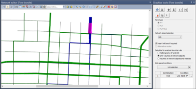

    <div id="vsebina">
    <div class="panel col-xs-12 col-sm-9 ">      
                
           
               <div class="paragraph collapse in col-xs-12 col-sm-8" id="visum"> 
                <h1 class="glavniNaslov">PTV Visum</h1>     
                <p class="bodytext">PTV Visum je vodeći svjetski softver za analizu prometa, predviđanja i GIS-based upravljanja s podacima.Konzistentno modelira sve sudionicie u prometu i njihove interakcije i tako postao je priznata norma u području prometnog planiranja. Stručnjaci za prijevoz koriste PTV VISUM za model transportnih mreža i  potražnju putovanja, za analizu očekivanog prometa, za planiranje uslug javnog prijevoza i razvoj naprejdnih prometnih strategija i rješenja. </p>
                            
                <p class="bodytext"><h3>Vaše prednosti</h3>
                <ul>
                  <li>Eminentni na korisnika, njihovih klijenata i znanstvenike - u cijelom svijetu</li>
                  <li>Zaštiti naložbu</li>
                  <li>Intuitivna uporaba</li>
                  <li>Integrativna u Vision Traffic softver familiji</li>
                  <li>Opisni i uvjerljivi rezultati</li>
                  <li>Dobra podržka</li>
                </ul> </p>
                <br>
                <p class="bodytext"><h3>Primjeri korištenja</h3>
                 Bez obzira da li ste uključeni u multimodalnom, javnom transportu ili privatnom transportnem inžiniringu - PTV VISUM podržava svoj svakodnevni rad u bilo kojem slučaju.   
                </p><br>  <li>
                <a href="#" data-toggle="collapse" data-parent="#vsebina" data-target="#primejriKoristenja"> PTV Visum - primjeri korištanja</a></li>  
                <p class="bodytext"><h3>Funkcije</h3>
                 PTV VISUM pruža sveobuhvatan niz funkcija za sve aspekte tranportnong planiranja i inžiniringa.  
                </p><br> <li>   
                <a href="#" data-toggle="collapse" data-parent="#vsebina" data-target="#funkcije"> PTV Visum - funkcije</a></li></div>           
<!--............................................... -->
              <div class="paragraph collapse col-xs-12 col-sm-8" id="znacajke" > 
              <h1 class="podNaslov">PTV Visum značajke</h1>    
               <p class="bodytext"><b> PTV VISUM 16 pruža vam nove mogućnosti dodjele i vizualizaciju, i štedi vam vrijeme s masivnim runtime nadogradnje. Oslobodite svoj unutarnji prometni inženjering s našim sve nove simulacije temeljene na dinamičkom dodjelom, te prikazati rezultate živo u 3D. Novi zadatak javnog prijevoza može uštedjeti i do 70% u trajanjima i kao i obično, mi i dalje kako bi se poboljšala već vodećih svjetskih korisničko sučelje. Mi smo sažeti vas ovdje najviše uzbudljive nove značajke. Također možete pronaći više detalja o ovim i drugim nove značajke u pregledu dokumenta.</b></p> 
              <h3>Simulacija na temelju dinamičkog dodjeljivanja (SBA) </h3><p>
                Do sada, tri vrste privatnog zadatka transporta bili dostupni za PTV VISUM korisnicima: statički zadatku, dinamički dodjele i pseudo-dinamici (zadatak sa ICA). Oni pružaju dobre rezultate za dugoročno i strateško planiranje, ali postoje situacije u kojima korisnik trebate detaljniji prikaz dinamike gužvi i prometne tokove. <br>

                To je razlog zašto PTV razvio je simulacija-based dinamičko dodjeljivanje (SPP) u PTV VISUM 16. pojedinih vozila i njihove interakcije su simulirane što znači da zagušenja efekti i zastoji tijekom vremena može realnije zastupljeni. Simulacija je u neposrednoj blizini mikrosimulacija znači da SBA je idealna odskočna daska između strateškog modeliranje u PTV VISUM i hibridnog simulacije u PTV Vissim.
              </p>
              <br>
                
               <p>Budući da je unutra PTV VISUM, SPP iskorištava modela podataka sječivo što znači da je SPP može primijeniti čak i za velike mreže, a sve ugrađene alate za analizu mogu se koristiti za tumačenje rezultata i kalibraciju modela potpore kao što su putu (npr dinamički snopovi flow) i dostupnost analize (tj dinamičke matrice obrano, Izokroni itd).</p>
               <h3>3D prikaz</h3>
               <p>Novi pogled na 3D mreža pruža korisnicima mogućnost da se izraze i stvoriti impresivan i intuitivne vizualizacije i video za izvješća i prezentacija. Vrijednosti atributa odnosnog modela su pružene u treću dimenziju i prikazuje u novootvorenim prozor. <br>

                Prijevoz modeli su podaci gladni i sve složenija. Kroz korištenje dodatnih dimenzija, korisnici mogu kreirati grafiku objasniti rezultata modela na nove načine dobiti nove uvide i poboljšati komunikaciju i razumijevanje za ne-modelare. Vizualizacije mogu čak biti oživljeni povezivanjem s dinamičkim rezultata modela i uz korištenje storyboards za pomicanje između položaja kamere. <br>

                
                </p>
              </div> 

<!--............................................... -->

              <div class="paragraph collapse col-xs-12 col-sm-8" id="funkcije" >
              <h1 class="podNaslov">PTV Visum funkcije</h1>             
               <h3>Modeliranje mreže</h3>
               <ul>
                 <li>PrT i PuT omogučata modeliranje u integriranom mrežu</li>
                 <li>Modeliranje brojnih prometnih sustava, načina prijevoza i korisničke klase</li>
                 <li>Korisnički definirane vrste objekata i atributa za fleksibilne modela podataka adaptaciju</li>
                 <li>Sub-mreža generacije</li>
                 <li>Distribuirani računalni na nekoliko računala pojedinih koraka postupka ili kompletnih scenarija (namjenski VISUM Motor je dostupan)</li>
               </ul>
               <h3>Izračun </h3> 
                 <ul>
                    <li>4 koraka modela</li>
                    <li>Tour-based model potražnje (Visem)</li>
                    <li>Potražnja model s istovremenim distribuciju i obračun način izbora (EVA)</li>
                    <li>Ugniježđena model potražnje</li>
                 </ul>                 
               <h3>PrT postupci dodjele</h3>
                <ul>
                   <li>Visoko konvergentne i brze procedure dodjele za realnim rezultatima
</li>
                    <li>Simultano dodjela nekoliko korisničkih klasa i fleksibilnog modela konektora (npr dodjela multi-point)</li>
                    <li>Izbor od nekoliko statičnih postupaka dodjele npr uključujući modele naplate cestarine i detaljne modele čvor impedancija</li>
                    <li>Dinamički postupak dodjele, dinamički korisnički ravnoteže (zbog) i dinamičkog dodjeljivanja stohastički</li>
                 </ul>  
               <h3>PuT postupci dodjele i operacije</h3>
               <ul>
                    <li>dodeljivanje koje temelji na razporedu</li>
                    <li>dodeljivanje koje temelji na napredku</li>
                    <li>linija za blokiranje</li>
                    <li>Modeliranje standardne tarife do složenih zbivati ​​sustava u jednom modelu</li>
                    <li>linija za obračun stroškova</li>
                 </ul> 
                 <h3>Prometni inžiniring</h3>
                <ul>
                    <li>Detaljni izračun čvor impedancija u čvor urednik (ICA)</li>
                    <li>Kodiranje raznih kontrolu signala (npr Vissig, RBC)</li>
                    <li>Optimizacija signala za zelenu vrijeme, vrijeme ciklusa i pomaka vremena</li>
                    <li>Sučelje za PTV Vissim mikro simulacije</li>
                 </ul>                   
               <h3>Izrada analiez i izvješća</h3>
               <p>Uz PTV VISUM možete jednostavno stvoriti uvjerljive analize, statistike i izvješća. U detalje možete prikazati sljedeće ispite </p>
               <ul>
                    <li>usporedba sccenarijev</li>
                    <li>matrični histogrami</li>
                    <li>interaktivna tražnja najkračeg puta</li>
                    <li>izokroni</li>
                    <li>analize okoliša (buka, emisije)</li>
                    <li>Analiza podataka nesreće</li>
                 </ul>  
               <h3>Interface</h3>
               <ul>
                    <li>COM: sučelje za skriptu-based aplikacije</li>
                    <li>Put sučelja vremenskog rasporeda sustava, npr Google Transit Feed, HAFAS, VDV 452, DIVA, railML ®</li>
                    <li> Izvoz sučelja, npr Oblik datoteke, SVG</li>
                    <li>Uvoz sučelja, npr Oblik datoteke, OpenStreetMap, Saturn, TransCAD, Emme, CUBE</li>
                 </ul>  
              </div>

<!--............................................... -->
              <div class="paragraph collapse col-xs-12 col-sm-8" id="demoVerzija">
              <h1 class="podNaslov">Demo verzija</h1>            
               <p class="bodytext">Probajte demo verziju i upoznajte PTV softwere!</p> 
               <div id="demoVerzija">
                <a id="mail" href="form.html">DEMO VERZIJA</a>
              </div>                
              </div>     
 <!--............................................... -->                  
          <div class="col-xs-11 col-sm-4">
            <aside>             
              <div id="pdfji">
                <b>Dodatne inforamcije:</b>
                <div class="pdf"><a href="../_ostalo/PTV_Visum_Brochure.pdf" target="_blank"><i class="fa fa-file-pdf-o" aria-hidden="true"></i>  PTV Visum Brochure</a></div>
                 <div class="pdf"><a href="../_ostalo/PTV_Visum_Modules.pdf" target="_blank"><i class="fa fa-file-pdf-o" aria-hidden="true"></i>  PTV Visum Modules</a></div>
                  <div class="pdf"><a href="../_ostalo/PTV_Visum_PuT_Brochure.pdf" target="_blank"><i class="fa fa-file-pdf-o" aria-hidden="true"></i>  Public transport planning brochure</a></div>              
              </div>

              <div>
                <a id="mail" href="mailto:info@appia.si" target="_top">Kontaktirajte  nas!</a>
              </div>
              <div id="demoVerzija">
                <a id="mail" href="form.html">Demo verzija</a>
              </div>
              <br>
              <div class="infoBox" id="distributer">                   
               <b id="kontaktDistributerjaNaslov">Kontakt distibuterja</b><br>
               <a href="http://www.appia.si/" target="_blank">Appia d.o.o </a> <br>
               telefon:+386 1 524 05 20<br>
               E: <a href="mailto:info@appia.si" target="_top">info@appia.si</a><br>
              </div>
            </aside>
          </div> 
    </div> <!--/PANEL  -->   
    </div><!--/VSEBINA  -->  